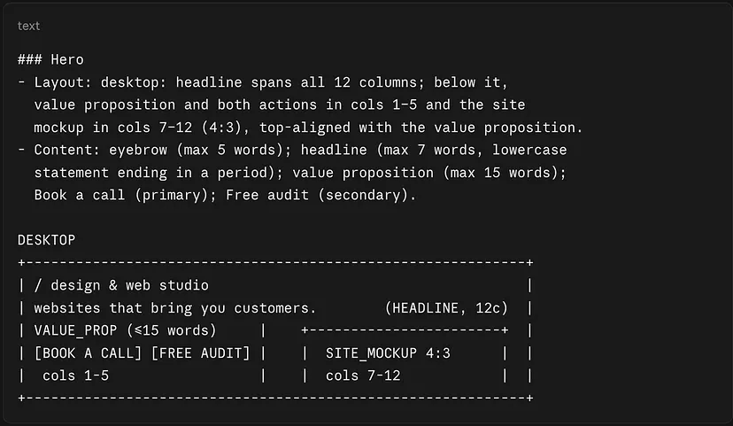

Notes on design, data, and shipping.
Where I think out loud about UX trends, design systems, conversion, and the projects I'm building. Less hot takes, more hard-won lessons.

Cómo dejé de iterar a ciegas con la IA
¿Cuántos tokens quemas haciendo una web con tu IA favorita? Yo gastaba cerca de dos sesiones completas con Claude por cada página. Así nació Skeleton, Bones & Skin: un archivo por cada dimensión del diseño, para que cada cambio tenga un solo lugar donde vivir.
More posts on the way. Follow along on Medium for new writing.
Follow on Medium